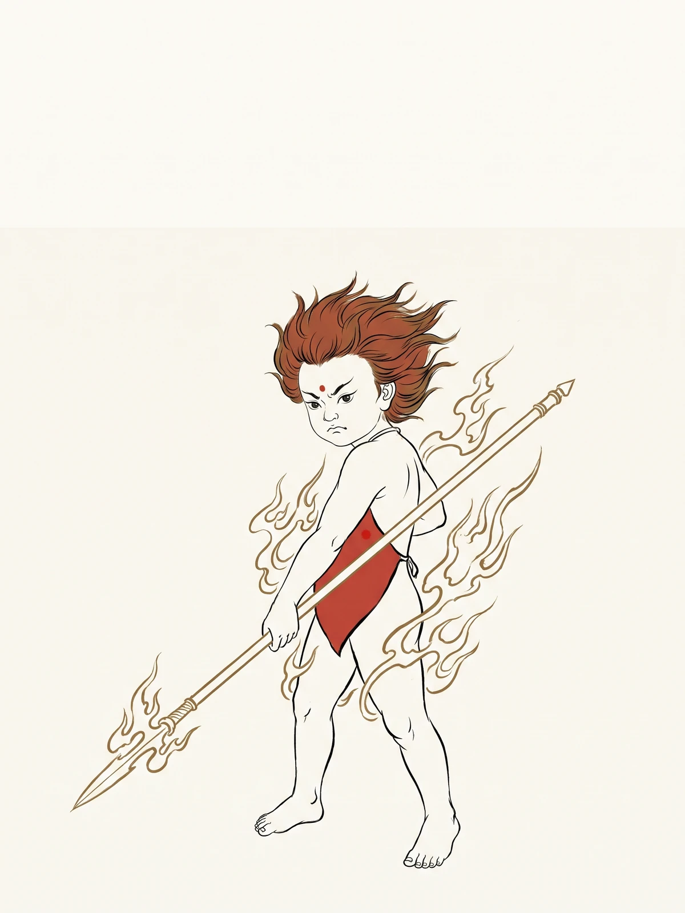

红孩儿

轨标：教学讲解 人物类别：妖魔 · 妖二代 数据指标：出场 3 回（第 40-42 回），总提及 ~80 次（待全量数据验证） 核验状态：未核验
一、出处与身世
红孩儿是西游诸妖中出身最显赫的一个。他是牛魔王与铁扇公主之子，乳名红孩儿，号"圣婴大王"。
家世
- 父：牛魔王（孙悟空结拜兄长）
- 母：铁扇公主（罗刹女，芭蕉洞）
- 叔：如意真仙（女儿国落胎泉守）
这是一个标准的"妖二代"。 他的本领不是野修来的，是家传的；他的领地不是抢来的，是继承的。号山六百里，是他父亲的旧业。
本领
三昧真火。这火非同寻常——不是凡火，不是雷火，是修行人在内丹中炼出的"真火"。红孩儿修炼三百年，已在五脏中固结此火，从口鼻中喷出。
一个三百岁的孩子，烧出了五百年的火。 这本身就是一种错位——他的"稚气"与他的"杀器"之间，隔着一整个世代的代差。
二、性格弧线
第一阶段：骄纵之始（第 40 回前）
号山六百里，红孩儿是这里的"小大王"。他抓走当地的土地山神，逼他们轮班当差、勒索常例。这不是一个孩子能想到的恶——这是他从父亲那里学来的"秩序"。
第二阶段：设计之诡（第 40 回）
红孩儿变作一个赤条条的孩童，吊在树上呼救。他知道唐僧的软肋是"慈悲"，知道悟空的软肋是"轻敌"。他选择"赤身"——是因为一个赤身的孩子，比穿衣的孩子更不像妖。
他的伪装，精准到了残忍的程度。 一个三百岁的孩子，把"孩童"当作了工具。
第三阶段：技术代差（第 41 回）
红孩儿与悟空正面交锋。悟空有金箍棒、筋斗云、七十二变，但红孩儿有三昧真火。这是一场"技术代差"的对决——红孩儿用一种悟空从未见过的火，烧穿了悟空的全部武装。
悟空第一次发现，"武力"在"技术"面前不堪一击。
第四阶段：被收之归（第 42 回）
观音以净瓶之水收服红孩儿，令其拜座下为善财童子。红孩儿被套上金箍、刀锁手足，归落迦山。
与悟空的紧箍不同，红孩儿的箍是"刀手箍脚"——更重，更狠。 因为观音知道：这个孩子不能只"听话"，得先"禁动"。
三、关键情节
| 回目 | 事件 | 性格体现 |
|---|---|---|
| 40 | 变赤身孩童骗唐僧 | 精准伪装 |
| 40 | 抢走唐僧，归号山火云洞 | 行动果断 |
| 41 | 喷三昧真火，败悟空 | 技术碾压 |
| 41 | 假变观音骗八戒入袋 | 临场应变 |
| 42 | 被观音以净瓶、天罡刀收服 | 仍欲反抗 |
| 42 | 拜善财童子，归佛门 | 强制归化 |
四、象征意义
一、修行试金石（考"求助"）
红孩儿不考悟空的武力——悟空武力打不过三昧真火。他考的是悟空"求助"的能力。悟空去落伽山请观音，是取经路上第一次"承认自己不行"。
红孩儿是悟空学会"示弱"的那一刀。 在此之前，悟空是"我去打"；在此之后，悟空渐渐学会"我去请"。
二、二代妖怪
红孩儿是西游谱系中少见的"二代妖怪"。他的本领来自父辈，领地来自父辈，连"不惧悟空"的底气也部分来自父辈——他知道父亲与悟空是结拜兄弟。
但父辈的恩怨，到子辈就变了味。 悟空打牛魔王是兄弟反目，悟空请观音收红孩儿是"叔辈收侄辈"。这中间的伦理错位，是西游最隐微的一笔。
三、稚气的武器化
红孩儿的"孩童"身份，是他的伪装，也是他的护身符。唐僧三番五次因"孩子"而动心，悟空三番五次因"妖魔"而下杀手。这一回考的不是妖与人的边界，是"表象"与"本质"的边界。
五、历史原型与演变
一、佛教魔概念
佛教中有"善财童子"典故——出自《华严经》，善财童子参五十三位善知识。观音收红孩儿为善财童子，正是将"魔"转化为"参学"的隐喻。这是佛教"魔佛一如"最形象的一次演绎。
二、《大唐三藏取经诗话》
取经诗话中并无红孩儿。深山火妖的母题虽有，但"三昧真火""圣婴大王"的形象，是世德堂本独创。
三、元杂剧
元杂剧《西游记》中已有"火妖"角色，但与牛魔王家世的关联，是明代定稿后才完成的家族谱系编织。
四、世德堂本定稿
明万历二十年（1592）世德堂本确立了红孩儿的最终形象：圣婴大王、三昧真火、号山火云洞、被观音收为善财童子。这是明代小说中最完整的一次"妖二代"塑造。（参 学术论文索引·V01 世德堂本）
五、现代演变
- 1986 央视版《西游记》：红孩儿成为"熊孩子"原型，突出稚气与骄纵
- 2010 年代后：网络解读渐多，红孩儿被赋予"家族恩怨延续者"色彩
- 当代折射：一个继承家业、技术超前、却又未脱稚气的"二代"，在今天的语境里有了新的指涉
红孩儿的悲剧，从明代到当代只换了名字——从"妖二代"到"二代"。 这中间的不变，是某种社会结构的长久沉默。
六、延伸思考
- 红孩儿的三昧真火，比悟空的火眼金睛"高明"在哪里？是技术，还是修行路径？
- 若牛魔王及时赶到，红孩儿是否还会被收？父亲的失职，在子辈的命运中占几分？
- 观音收红孩儿为善财童子，是"度化"还是"收编"？佛门的"善财"与天庭的"弼马温"，本质上有何不同？
- 一个三百岁的孩子，被强制归化——这是修行，还是规训？当我们说"红孩儿长大了"，我们究竟在说什么？
导航：返回人物谱系表 · 站点首页 · 妖怪谱系深度分析 · 牛魔王 · 铁扇公主 · 白骨精 · 六耳猕猴 · 八十一难